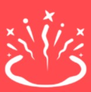

Astra |
 |
| Real Name: |
Efia Danso |
"Astra", also known as Efia Danso, Is the 16th agent from the valorant protocol. She has an arm piece to control and send stars on the ground on her "astral form" she can smoke concuss and pull enemies and even make a wall. One of her arm pieces seem to be stolen as an artifact... |
| Origin: |
Ghana |
| Race: |
Radiant |
| Gender: |
Female |
Astra's Role and Abilities |
Role: |
 Controller Controller
|
Abilities |
|
Gravity Well |
| Costs: |
0 creds |
| Max Charges per round: |
1 (Recharges after 45 seconds after used) |
| Description: |
ACTIVATE a Star to form a Gravity Well. Players in the area are pulled toward the center before it explodes, making all players still trapped inside vulnerable. |
Controllers are experts in covering up dangerous territory by placing "smokes" or "walls" to set their team up for success. |
|  |
Nova Pulse |
| Costs: |
0 creds |
| Max Charges per round: |
1 (Recharges after 45 seconds after used) |
| Description: |
ACTIVATE a Star to detonate a Nova Pulse. The Nova Pulse charges briefly then strikes, concussing all players in its area. |
|
Nebula/Dissipate |
| Costs: |
0 creds |
| Max Charges per round: |
2 (Recharges after 25 seconds after used) |
| Description: |
ACTIVATE a Star to transform it into a Nebula (smoke). USE a Star to Dissipate it, returning the Star to be placed in a new location after a delay. Dissipate briefly forms a fake Nebula at the Star’s location before returning. |
The Valorant Protocol
 Brimstone Brimstone
 Viper Viper
 Omen Omen
 Killjoy Killjoy
 Cypher Cypher
 Sova Sova
 Sage Sage
 Phoenix Phoenix
 Jett Jett
 Reyna Reyna
 Raze Raze
 Breach Breach
 Skye Skye
 Yoru Yoru
 Astra Astra
 KAY/O KAY/O
 Chamber Chamber
 Neon Neon
 Fade Fade
 Harbor Harbor
|
|
Astral Form |
| Costs: |
150 creds (Signature ability) |
| Max Charges per round: |
4 (Starts with 1 per round) |
| Description: |
ACTIVATE to enter Astral Form where you can place Stars with PRIMARY FIRE. Stars can be reactivated later, transforming them into a Nova Pulse, Nebula, or Gravity Well. |
|
Cosmic Divide |
| Costs: |
7 ultimate points |
| Max Charges per round: |
(Ultimate) |
| Description: |
When Cosmic Divide is charged, use SECONDARY FIRE in Astral Form to begin aiming it, then PRIMARY FIRE to select two locations. An infinite Cosmic Divide connects the two points you select. Cosmic Divide blocks bullets and heavily dampens audio. |
Tricks |
| 1. Pulling them in! |
 |
The Gravity Well can help alot on post plant, This can pull enemies when defusing out into the open and this will achieve two things, put them in a vulnerable position and stop them from defusing. |
| 2. Astral Hide |
 |
In astra's astral form her legs get pulled up. You can exploit this by placing a smoke on a box and then going into astral form right under it. Normally, enemies could see your feet. But because of the elevated position, the enemies would not think that an enemy is in that position. You can then suprise them when they least expect it. |